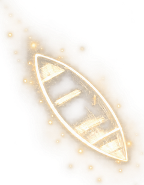
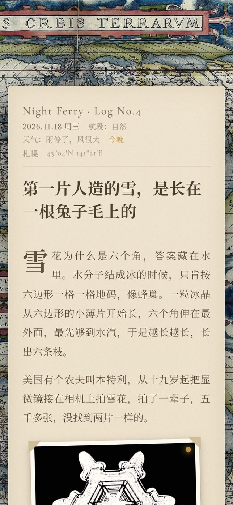

A ship's log for bedtime
Night Ferry
夜航船
每天晚上，让你的 AI 给你写一篇睡前读的小文
One short article a night, written by your AI —
with pictures it found and looked at itself.
with pictures it found and looked at itself.

